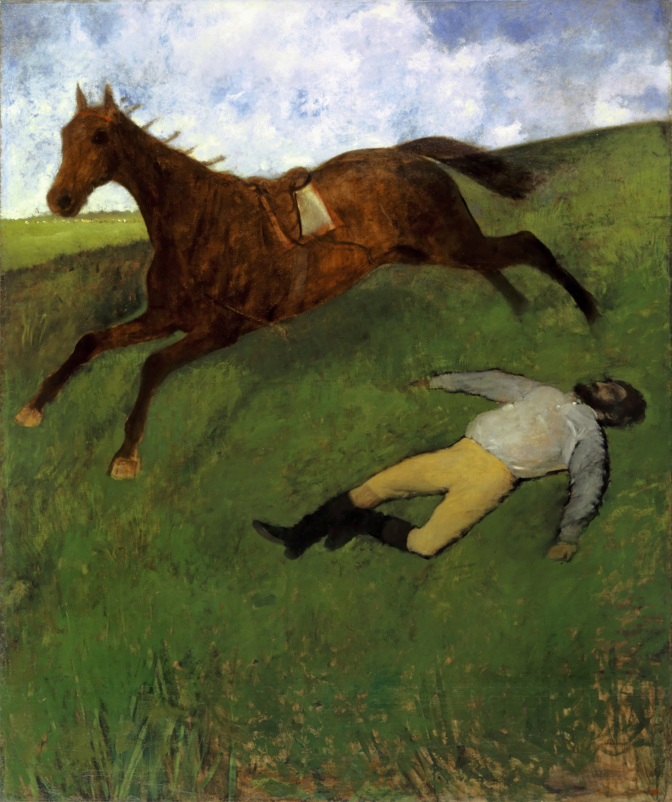

Илер-Жермен-Эдгар де Га (Эдгар Дега)
Jockey blessé (Раненый жокей), 1896-1898

Холст, масло, 180,6 x 150,9 см
Базельский художественный музей, Базель. Приобретена по специальному кредиту правительства Базеля в 1963 г.
История картины
- Студия Дега
- продажа Дега, 1918, I, № 56 ( пред.)
- Дюран-Рюэль и компания, Париж, февраль 1913 г.
- Йос Хессель, Париж
- анонимная продажа, Париж-Друо, 9 июня 1928 г., № 36 – пред.)
- Жорж Бернхайм, Париж
- Альфонс Канн, Сен-Жермен-ан-Ле
- ограблен нацистами во время Второй мировой войны
- возвращён Альфонсу Канну, Лондон, 11 июля 1947 г.
- Бенатов, Париж, 1955-1957 гг.
- галерея А. Зильбермана, Нью - Йорк, около 1959 г.
- Базель, художественный музей, 1963. Интерес Дега к теме скачек (лошади в конюшне, на пастбище и на ипподроме) возник после визита к его другу Полю Вальпинсону в сентябре-октябре 1861 года. В 1823 году Вальпинсоны приобрели замок Мениль-Юбер в Нормандии. Он располагался недалеко от Харрас-ле-Пена, национального центра коневодства, и небольшого ипподрома в Аржантане. Базельская картина связана с первым изображением «Сцена из скачек с препятствиями» 1866 года. С этой картиной художник представил себя художественной публике на Парижском салоне того же года («Сцена в шпиле», частная коллекция Меллона). Написанная в 1866 году, она была переработана в 1880/81 и около 1897 годов. Толчком к первой переработке в 1880/81 году послужило то, что брат Мэри Кассат, Александр, был заинтересован в покупке картины. Вторая переработка была сделана в период работы Дега над базельской картиной. Рентгеновский и инфракрасный анализ базельской картины, проведённый в 1989 году, показывает, что Дега изначально намеревался изобразить жокея в бессознательном состоянии, как на картине из коллекции Меллона. Лишь позже он выбрал более двусмысленное изображение: вместо живописной структуры, предполагающей причинно-следственную связь или повествование в событиях картины, её место заняла плоскостная композиция с жокеем и всадником как диссонирующими элементами. Картина оставалась во владении Дега до её продажи в 1918 году. Нет известных свидетельств приёма при жизни Дега. По своему формату и устойчивости к примирительной интерпретации базельская картина занимает уникальное место среди обширного корпуса рисунков, пастелей, картин, моделей и скульптур лошадей, скачек и жокеев.